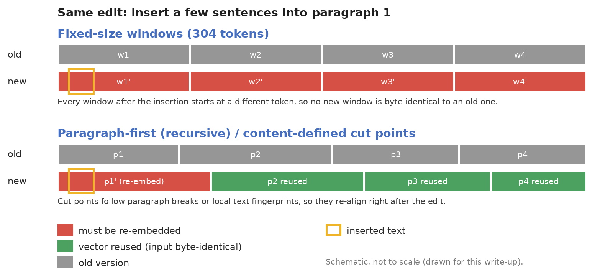
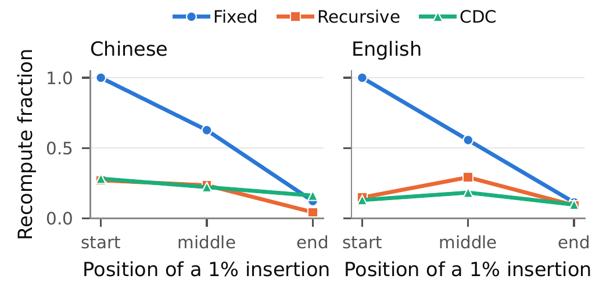

RAG 的分块方案几乎都只在一份静态语料上比较，可知识库里的文档一直在改。每个块单独编码成向量，一次编辑如果让块边界移动，边界两侧的块就成了新的编码输入，哪怕里面的字一个没改。这篇 6 页的短文专门测量这笔更新成本：作者取 120 对相邻版本的中英文维基百科条目，规定只有块的完整编码输入和旧版本逐字节相同才复用旧向量，用冻结的 BGE-M3 编码器比较三种分块方式。在三种方法都跑通的 116 篇条目上，不重叠的固定长度切块要重算新版本 57–68% 的编码输入，段落优先的递归切块 38–56%，内容定义切块（CDC）43–54%；而在 2048 token 的检索预算下，三者的证据召回率在同一种语言内相差不到 2 个百分点。固定长度切块在插入点之后整体平移，后面的窗口没有一个能和旧版本对上，这是它重算最多的原因。递归切块和 CDC 谁更省，则会随块长参数变化而互换。
1. 为什么要测更新成本
一个英文条目只改了 0.13% 的文字，固定长度切块重算了 49% 的编码输入，段落优先切块只重算了 8%。这个例子来自论文的数据集，它说明编辑量和重算量可以差得很远，差距由切块规则决定。
对一个持续更新的知识库，重算量直接对应编码计算量和向量索引的写入量。以往的分块评测只比检索质量，两个检索质量相当的方案，更新成本可以差很多：本文英文条目上，固定长度切块的平均重算比例是段落优先切块的 1.5 倍（57% 对 38%）。作者想回答三个问题：三种分块方式各要重算多少；重算多少由编辑大小、编辑位置还是切点规则决定；重算少的方案是不是检索质量也更差。
2. 测量方法

复用规则很严格：一个块的完整编码输入（文本加编码器的特殊 token）必须和旧版本里某个块的输入逐字节相同，才能复用旧向量，差一个字符就算新输入。缓存只包含同一篇文档的上一个版本，不跨文档匹配。重算比例的定义是：
其中 是分块方法 在新版本上产生的所有不重复编码输入， 是其中在旧版本缓存里找不到的那部分，$T(x)$ 是块 的输入 token 数。 表示全部复用， 表示全部重算。作者还做了一个空编辑对照：同一个版本切两次， 必须是 0，否则算流水线故障。
三种分块方式都只看当前版本和固定参数，不看旧版本的切法：
- 固定长度切块：按 token 贪心切出最多 304 个 token 的不重叠窗口。
- 递归切块：一段文字超过 400 token 的目标长度就切开，优先在空行处切，其次是换行，再次是后面紧跟空白的句末标点（中英文标点都算），都不行才退回固定窗口，然后把小单元贪心地拼到不超过目标长度。
- CDC：用 Steadlith 实现，对词序列计算 Rabin 滚动指纹（在一个滑动窗口内对相邻几个词算哈希），切点规则是：块长达到 176 token 后往后找，遇到第一个哈希值低 8 位全为 0 的位置就切开（Steadlith 的默认设置）；到 352 token 还没遇到，就退而用最后一个低 6 位全为 0 的位置，再没有就在 352 token 处直接切断。这种方法原本用于文件系统去重，切点只取决于附近的内容，所以文件前面插入字节不会让后面的切点移动。
三种方法的块长参数事先调过，让中位块长接近（实际最大比值 1.17）。
检索质量这样测：每篇条目配两个问题，共 240 个问题，人工在每个版本上标出能回答问题的字符区间。检索时的候选池由同一批收集的所有条目组成（论文没有给出每批多少篇）：被提问的那篇用要测的版本，其余条目用旧版本。所有块按点积排序，把整块按名次放进 2048 token 的预算，预算内的块覆盖了一组完整证据就记召回为 1。
3. 实验
3.1 主结果：固定长度切块重算最多，召回率差别很小
这组实验回答三种方法各要重算多少、检索质量是否有差别。做法是在 116 篇三种方法都跑通的条目上，用固定参数统计平均重算比例和证据召回率（论文 Table I）：
| 语言 | 分块方式 | 重算比例 | 证据召回率 | 中位块长（token） |
|---|---|---|---|---|
| 中文 | 固定长度 | 68.4% | 97.4% | 304 |
| 中文 | 递归 | 55.7% | 98.3% | 356 |
| 中文 | CDC | 54.0% | 98.3% | 314 |
| 英文 | 固定长度 | 57.4% | 96.7% | 304 |
| 英文 | 递归 | 37.9% | 96.8% | 342 |
| 英文 | CDC | 42.8% | 95.0% | 291 |
按篇配对比较，递归切块比固定长度少重算 12.7 个百分点（中文，95% 区间 −19.7 到 −6.2）和 19.6 个百分点（英文）；CDC 比固定长度少 14.4 和 14.7 个百分点。召回率的配对差在 −1.9 到 +0.9 个百分点之间，区间都包含或贴着 0。作者明确说，这些区间不能排除召回率下降，也不能证明两者等价，所以不按召回率给方法排名。
中文上递归切块的优势比英文小，原因在切点规则：中文句末标点后面通常没有空格，过长的中文段落切不到句子边界，只能退回固定窗口。
编辑越小，差距越明显。在只改了不到 5% 的英文条目上，固定长度切块平均要重算 46% 的编码输入，递归切块和 CDC 只要四分之一左右，因为它们的切点跟着内容走，改动不会把后面的切点全部推移。中文条目上的规律一样，固定长度要重算六成以上，CDC 最少（36%）。编辑量超过一半时，三种方法都要重算六到九成，这时选哪种切块已经无所谓了。
3.2 编辑位置：为什么固定长度切块重算这么多

这组实验检验“边界平移”是不是重算的主要来源。做法是只改一个变量：同样 1% 的插入，放在文章开头、中间或结尾，其余不变。结果：固定长度切块从文首插入时的 100% 降到文末插入时的约 12%，因为插入点之后的每个窗口都向后平移了插入的长度，下游没有一个块能复用。递归切块和 CDC 在三个位置都低于 30%，段落分界和内容指纹切点在编辑后很快重新对齐。
作者还做了一个逐字核对：重算的输入里，有多少文字其实原样存在于旧版本中。英文条目上，固定长度切块重算的 token 有 50% 是旧版本里原样有的文字，CDC 是 33%，递归切块是 12%（中文分别是 47%、45%、37%）。这部分文字一个字没改，只是被切到了不同的块里，所以重算它们完全是切点规则造成的。
3.3 递归切块和 CDC 谁更省，取决于参数
这组实验检验两种内容感知方法的排序是否稳定。做法是不重新调参，把每种方法的目标块长（CDC 调的是块长上限）在 256 到 496 token 之间取 6 档，在中位块长比值不超过 1.15 的配对设置下比较。结果：CDC 减递归的重算差在英文上从 −2.4 到 +6.2 个百分点，中文上从 −0.7 到 +5.5，两种语言里都出现正负翻转。例如英文上把递归切块的目标长度从 400 提到 448，重算比例从 37.9% 升到 46.2%，同样 448 的 CDC 是 43.8%。原因是递归切块会把多个小段落拼成一块，一处编辑改变某段长度后，后面几段的拼法可能跟着变，目标长度越大，这种连锁变化传得越远。固定长度切块在所有设置下都是重算最多的。
作者在 arXivEdits 论文修订数据上又核对了一次成本：固定长度、递归和 CDC 的平均重算比例分别是 94.5%、81.4% 和 80.2%，固定长度仍然最高。这个数据集的文本抽取噪声没有量化，所以只作为成本的旁证。
3.4 重叠窗口不是解法
常见的补救办法是让相邻固定窗口重叠 32 或 64 个 token。结果是重算比例和不重叠时相差不到 1.3 个百分点，编码输入总量多了 10–26%，英文召回率还降了 3.0 和 3.9 个百分点，因为重复的文字占用了 2048 token 的检索预算。
4. 局限
作者列出的局限：只有维基百科一个来源；240 个问题的标注没有多人独立裁决，版本对是分三轮收集的，前两轮人工检查原始维基文本，第三轮规模更大，靠自动过滤加两次模型检查；作者从后两轮的标签里分层抽了 60 个亲自复核，57 个和原标注一致，不一致的 3 个都是原来标为“无法回答”、但对应版本里其实有相关信息的问题；三种方法的中位块长比值是 1.17，超过了预设的 1.15；只用了一个编码器；同类方法 KARA 没有运行：它保留上一版的分块布局，在候选切点上建图，用最短路径选出能最多复用旧块的切法，是专门为增量更新设计的，没有和它比，就不知道这类方法能把重算量再压低多少。CDC 在 4 篇中文条目上失败，原因是 CDC 按空格分词，一长串没有空格的中文被当成一个 403–550 token 的单元，超过了 352 的上限。
另外两点需要注意。第一，116 篇里有 105 篇三种方法都找回了全部证据，召回率普遍在 95% 以上，接近天花板，这个检索设置区分不出方法间的细小质量差别。第二，重算比例衡量的是编码输入量，没有换算成延迟或费用；如果编码在整个更新流程里只占小头，比如索引重建或审核更贵，这几十个百分点的差距在总成本里会被摊薄。
5. 实践意义
一是知识库如果频繁小幅修改，不要用不重叠的固定长度切块。换成段落优先的递归切块，英文条目的平均重算比例从 57% 降到 38%，小编辑条目从 46% 降到 25%，检索召回率基本不变。前提是用逐字节相同的输入做缓存键，只要文本没变就复用向量。
二是评测分块方案时，把重算比例和检索质量一起报告，并在自己的块长参数下实测。递归切块和 CDC 的排序会随参数翻转，论文里任何一个排名都不能直接搬用。中文语料要注意切点规则是否依赖空格，否则递归切块会退回固定窗口，CDC 会直接失败。